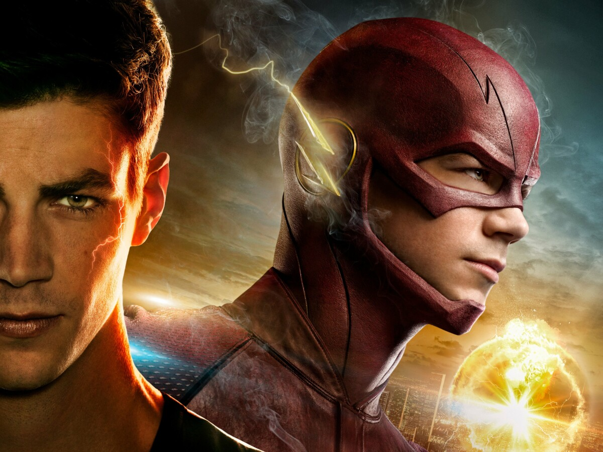

About The Flash
Barry Allen is a reinvention of a previous character called the Flash, and is universally regarded as the most popular version. Because he is a speedster, his power consists mainly of superhuman speed.
The flash's Identity
The Flash's Superpowers
- He's is super fast
- With his speed, he can travel through Time
- He is connected to the Speedforce
The Flash's team
Barry allen also known as the flash has a great team.Team Flash, also known as Team S.T.A.R. Labs and nicknamed Super Friends, was a vigilante team dedicated to fighting meta-human criminals, who were affected by the S.T.A.R. Labs particle accelerator explosion, which was triggered by Eobard Thawne disguised as Harrison Wells. Team Flash also fought other criminals that endangered the people of Central City and beyond whenever possible. Here is more about them: